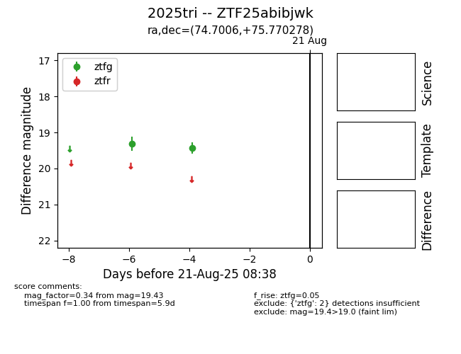

Target 2025tri at 2025-08-21 09:16, see:
FINK: fink-portal.org/ZTF25abibjwk
Lasair: lasair-ztf.lsst.ac.uk/objects/ZTF25abibjwk
ALeRCE: alerce.online/object/ZTF25abibjwk
TNS: wis-tns.org/object/2025tri
YSE: ziggy.ucolick.org/yse/transient_detail/2025tri
alt names
ZTF25abibjwk (ztf,alerce)
2025tri (tns,yse)
coordinates:
equatorial (ra, dec) = (74.7006,+75.77028)
galactic (l, b) = (136.2487,+19.80089)
photometry
last ztfg=19.43
2 ztfg detections
